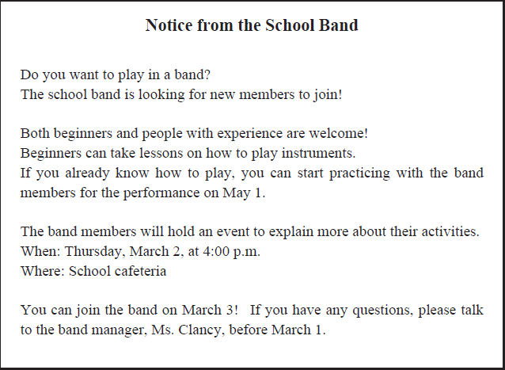
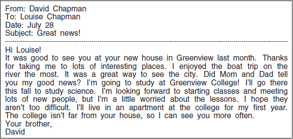
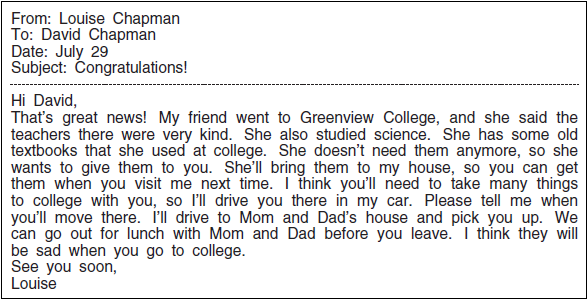
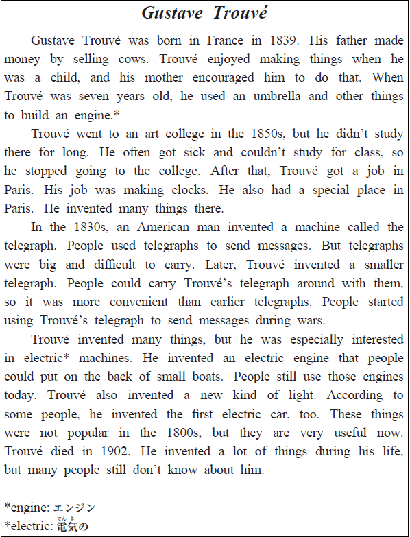

英語検定 ３級(2024年第3回No.3) 残り時間が0になると、自動的に採点します。 時間内に終了する場合は、一番下の「採点する」のボタンを押してください。 残り時間： 分 秒 No 英語検定３級筆記(2024年第3回) 3A 次の掲示の内容に関して、(21)と(22)の質問に対する答えとして 最も適切なもの、または文を完成させるのに最も適切なものを、 解答欄の1～4の中から一つ選びなさい。  No21 What is this notice for? 1 To ask people to sell their old instruments. 2 To introduce the new band manager. 3 To find new members for a band. 4 To tell students about a new cafeteria. 答え： 1 2 3 4 No22 When will the band members share information about their activities? 1 On March 1. 2 On March 2. 3 On March 3. 4 On May 1. 答え： 1 2 3 4 3B 次のEメールの内容に関して、(23)から(25)までの質問に対する答えとして最も適切なもの、 または文を完成させるのに最も適切なものを、解答欄の1～4の中から一つ選びなさい。   No23 What will David do this fall? 1 Go on a boat trip. 2 Start studying at college. 3 Begin teaching science. 4 Start living in Louise’s house. 答え： 1 2 3 4 No24 Louise’s friend will 1 or 2 or 3 or 4 1 show David around Greenview College. 2 sell a car to Louise. 3 give David her old textbooks. 4 clean Louise’s house with Louise. 答え： 1 2 3 4 No25 What will Louise do for David? 1 Take him to college in her car. 2 Help him to find a new house. 3 Make him some lunch. 4 Return a book to their parents. 答え： 1 2 3 4 3C 次の英文の内容に関して、(26)から(30)までの質問に対する答えとして最も適切なもの、 または文を完成させるのに最も適切なものを、解答欄の1～4の中から一つ選びなさい。  No26 What did Gustave Trouvé like to do when he was young? 1 Fix umbrellas. 2 Help his parents. 3 Make things. 4 Take care of cows. 答え： 1 2 3 4 No27 Why did Trouvé stop studying at the art college? 1 He thought the lessons were too easy. 2 He was often sick and couldn’t study. 3 He broke a clock at the college. 4 He didn’t want to live in Paris. 答え： 1 2 3 4 No28 Why was the telegraph that Trouvé invented convenient? 1 It was big and difficult to break. 2 It had many bright lights on it. 3 It was small and easy to carry. 4 It could be used to send pictures. 答え： 1 2 3 4 No29 Trouvé invented an engine 1 or 2 or 3 or 4 1 for a machine that sent telegraphs. 2 for a machine that made lights. 3 to sell to an American man’s company. 4 to put on the back of boats. 答え： 1 2 3 4 No30 What is this story about? 1 The best way to make engines. 2 The first person to use a telegraph. 3 A man who made many useful things. 4 A famous art college in France. 答え： 1 2 3 4




 英語検定 ３級(2024年第3回No.3)
英語検定 ３級(2024年第3回No.3)